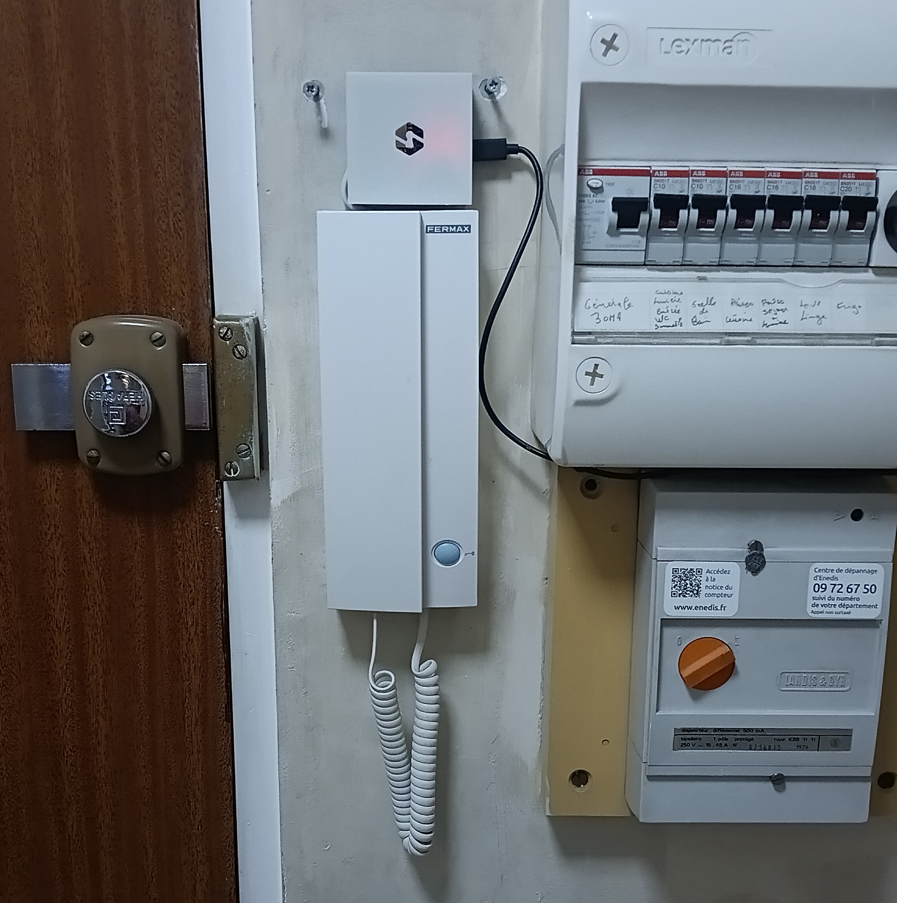
Fini les boîtes à clés ! Faites ouvrir la porte de votre immeuble avec un téléphone — sans application.
Ah ouais !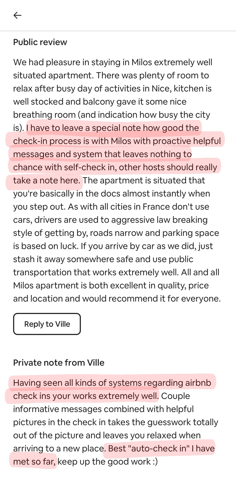
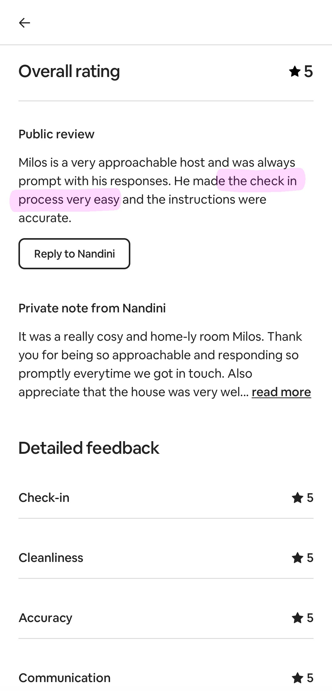
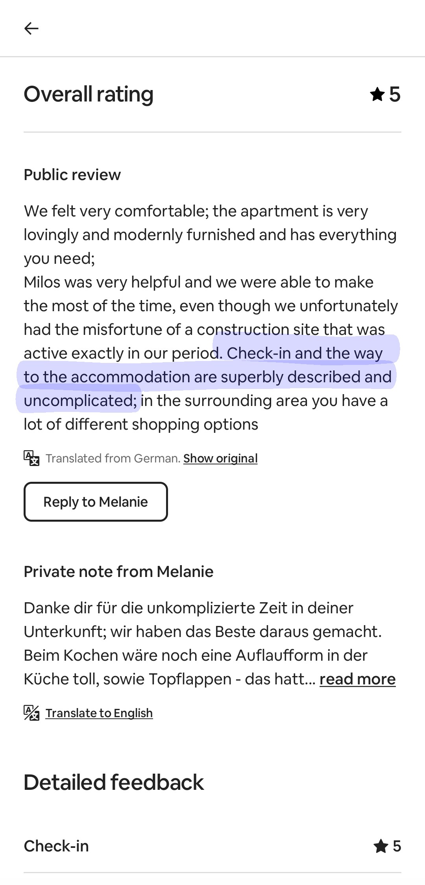
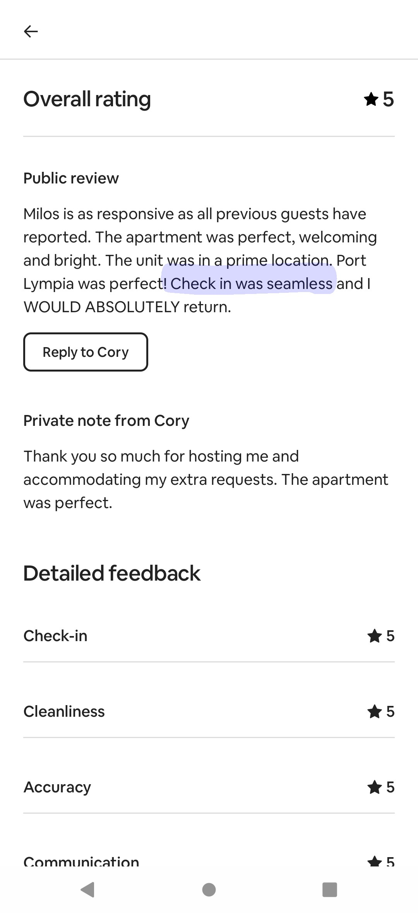
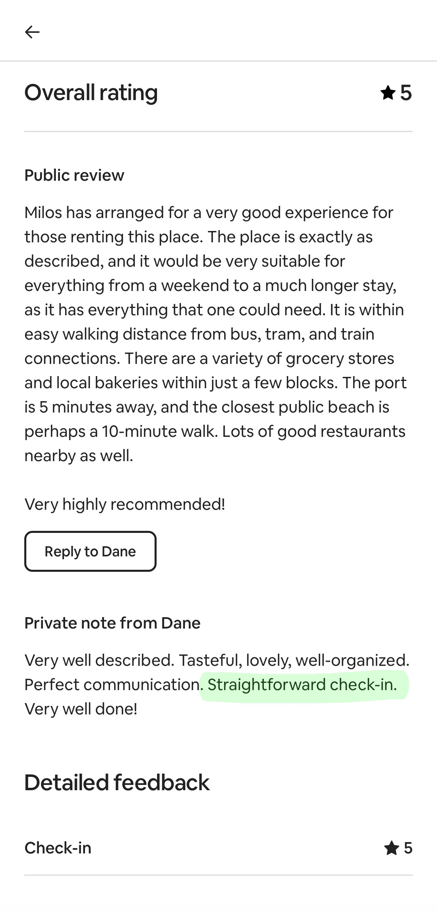
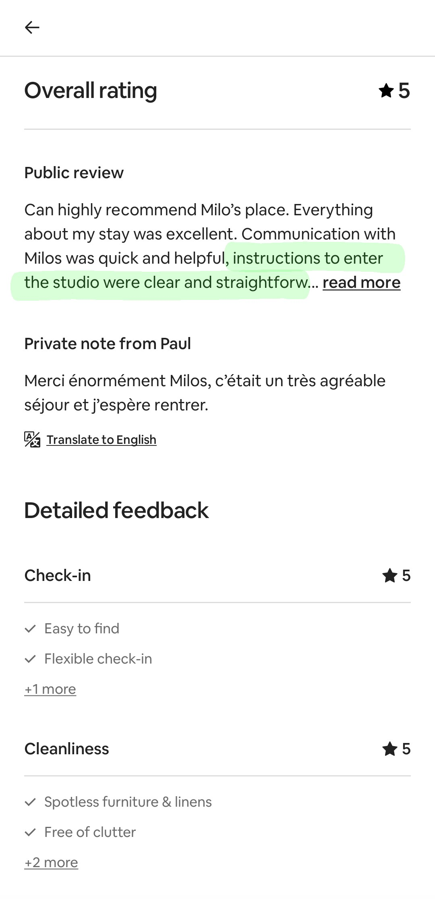
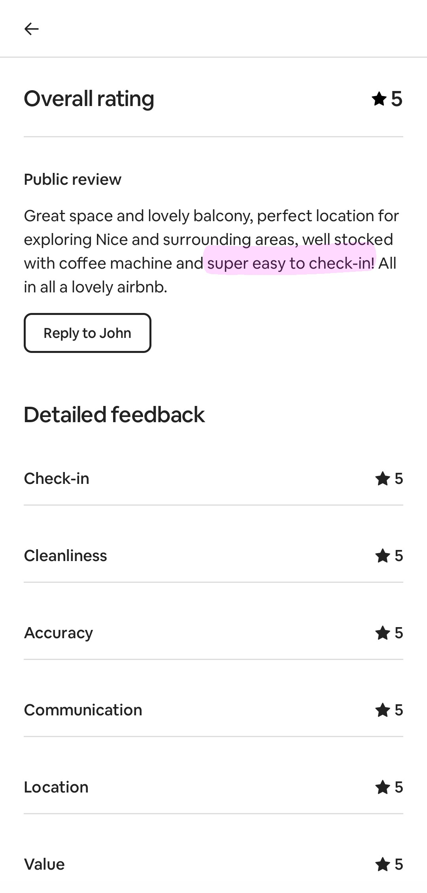
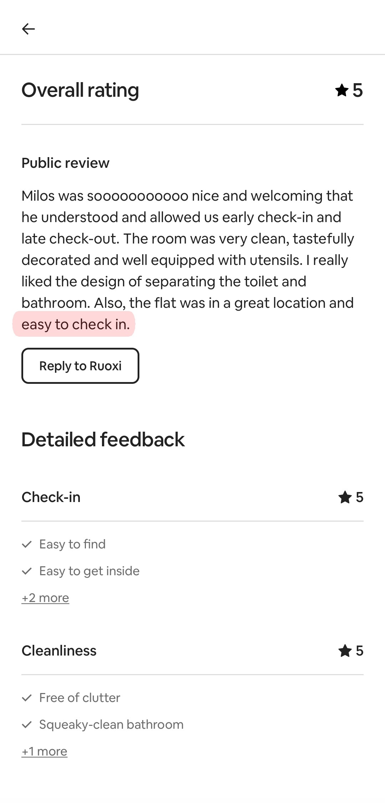
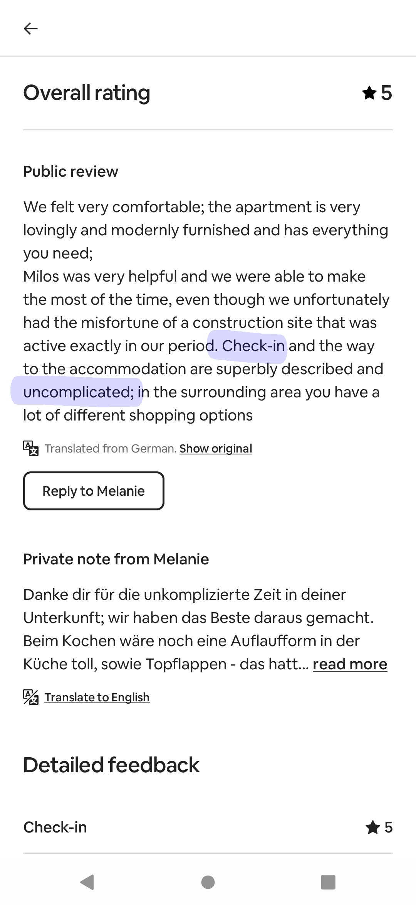
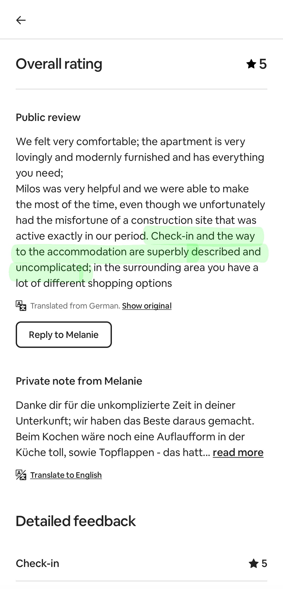
Branchez Sezaam Opener sur votre interphone.
Créez un nouveau code d'accès depuis votre tableau de bord.
Partagez le lien de l'appareil avec vos voyageurs.
Accordez ou révoquez l'accès à tout moment, où que vous soyez.
Pas besoin de compliquer la vie de vos voyageurs : aucune application à installer ni aucun compte à créer.
Voyez qui a ouvert la porte et quand, vérifiez l'état de l'appareil, et bien plus encore.
Fonctionne avec presque tous les interphones (certaines installations peuvent demander un peu plus de travail — consultez la FAQ).
Plus besoin de craindre que vos boîtes à clés soient volées ou retirées.
Vous n'attendez pas les voyageurs — et vous ne perdez plus de temps à gérer les boîtes à clés.
Évitez les longues explications : envoyez la même procédure d'arrivée, simple et claire, à tout le monde.
Sezaam Opener est un projet passion — conçu de A à Z par un hôte qui aime la technologie, l'automatisation et les solutions qui simplifient la gestion locative.
Le prototype actuel n'est pas encore produit commercial, mais il est entièrement fonctionnel ✨. Si vous souhaitez le tester et contribuer à façonner la version finale, laissez-nous votre e-mail et nous vous contacterons rapidement !
Vos données ne sont utilisées que pour vous recontacter — en savoir plus.
Oui — il peut être installé sur n’importe quel interphone. Certaines installations sont aussi simples qu’un branchement de fils ; d’autres peuvent nécessiter un peu de soudure.
D'un interphone compatible, d'un réseau Wi-Fi à proximité de l'interphone, et d'un compte Sezaam. L'installation prend environ 10 minutes et ne nécessite aucun outil spécialisé.
Non — il est installé à l’intérieur de votre appartement, vous n’avez donc besoin de l’autorisation de personne.
Vos voyageurs n'ont rien à installer. Ils reçoivent un lien avec un code, ouvrent la page dans leur navigateur, et entrent le code pour ouvrir la porte. C'est tout.
Absolument. Contrairement aux digicodes traditionnels, Sezaam inclut une limitation du nombre de tentatives (les tentatives incorrectes sont bloquées) et vous permet de renouveler les codes aussi souvent que vous le souhaitez.
Toutes les données sont chiffrées en transit et au repos selon les normes du secteur.
Non — Sezaam Opener est conçu uniquement pour les portes d’immeubles ou de garages.
Si vous avez d'autres questions n'hesitez pas à nous écrire !